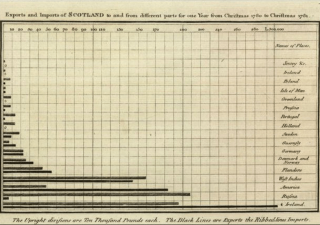
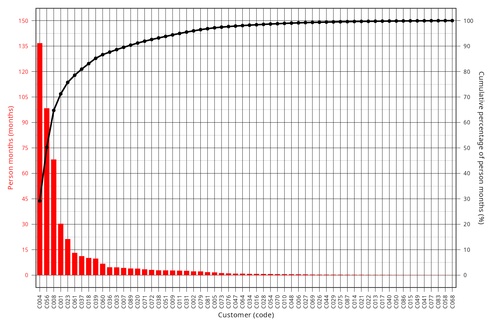
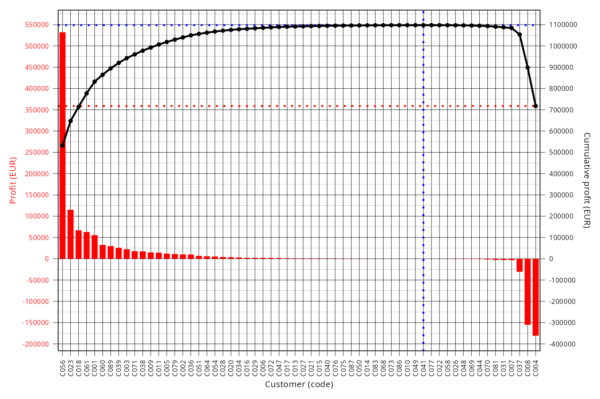
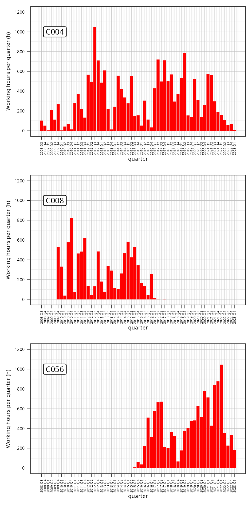

The tale of the sunfish and the whale
or, some lessons that should have been known from the start
Inspiration
Once upon a time …, no, that is how fairy tales begin. And they usually end well. Not this tale. So, some time ago, I met a general manager. Actually, I think more of it as a division manager, as he was supposed to manage, well, a division. Job title inflation or job content deflation, who will tell?
After some chatting, he mentioned that he would dig into invoices sent and prepare a Pareto plot to see which customers contributed most to the turnover of the organisation.
I was aware of questions floating around about which projects were contributing the most to the overall turnover, which projects brought a lot of work but not a corresponding decent amount of revenue and which projects had a better revenue-to-effort ratio. So, I suggested that maybe it would be better to make a whale plot instead of a Pareto plot. The response surprised me, although at that time there was not too much that could surprise me anymore.
Whale plot, Pareto plot, whatever you call it, it’s all the same.
Huh? Okay, your way. End of discussion. But I don’t think so. They may be related, but that is not the same as the same. By the way, to avoid confusion, we define turnover and income for this contribution1.
Pareto plots
A bit of history
Let’s recall: Pareto plots. A Pareto plot or chart refers to a visualisation of the Pareto principle. According to this principle, a large percentage of effects often come from a small percentage of causes. The Pareto principle was named after Vilfredo Pareto (°1848 – +1923). He was an Italian economist, among other things, and his research on wealth distribution in Italy revealed that approximately 80% of the land was owned by 20% of the population. This observation, along with others he made about unequal distribution in other areas, resulted in what is now called the Pareto Principle. It is commonly also named the “80/20 rule”, although it was not called as such by Pareto himself.
A Pareto plot, in general, displays the relative frequency, amount, size or severity of problems, defects, or causes in a process. The plot combines a bar chart and a line plot. The bars represent individual categories or factors. The height of each bar indicates the magnitude of that factor. So, in Pareto’s original research, each bar would represent a land owner, and the height of the bar would be the area of land owned. Note that the data are ordered and plotted from largest to smallest. The line plot shows the cumulative total of the factors. For clarity, this cumulative total is most often shown as a percentage.
By the way, according to a source2, Pareto not only did not mention the “80/20 rule”, he apparently even did not make a Pareto plot himself. It was Joseph Juran (°1904 – +2008), well known for his work on quality and quality management, who named the Pareto plot after Vilfredo Pareto.
Mark Paradies suggests that graphics expert William Playfair (°1759 - +1823) drew the first graph that can be considered a Pareto chart (without the cumulative line, however). It was published in 1786, about 62 years before the birth of Vilfredo Pareto.
William Playfair’s chart, about Exports and Imports of Scotland to and from different parts for one Year from Christmas 1780 to Christmas 1781, published in The Commercial and Political Atlas of 1786, is shown in Figure 1. In this bar chart, Scotland’s imports and exports from and to 17 countries in 1781 are represented. It is said to be the first quantitative graphical form that did not locate data either in space, as had coordinates and tables, or time, as had Priestley’s timelines. Yet, it offers a solution that allows quantitative comparison.

On the other hand3, the idea of representing data as a series of bars had earlier been published by Jacobus de Sancto Martino and attributed to Nicole Oresme in the 14th century.
I guess Stigler’s law of eponymy4 plays here as well.
Anyhow, back to business.
Show me the data
I am not sure I have ever seen the result of the exercise. But it should not be too difficult to simulate the outcome of the experiment. Only, I do not have the data. Detailed financial data are trade secrets, and they are not generally available.
Now, there are also data that were easily accessible, were not labelled as confidential, and that did not have commercial value: time sheets.
When, and how long, did someone work on a specific project for a given customer? Of course, this does not give the complete image. It does not tell anything about material cost, other direct and indirect costs, overhead, mark-up, processes used, etcetera. And, since customers and project topics are anonymised as a standard procedure, confidentiality is safeguarded as well. So the recorded working hours devoted to projects for a given customer can serve for educational purposes.
So, here we go. It took, as usual, a lot of data cleaning and exploratory data analysis. From the first use of the time registration software (2008-02-25) to the last day of the paid subscription to the service (2023-02-28), 24 people registered more than 190000 hours in more than 550 projects for more than 80 customers (internal and external), equivalent to more than 120 person-years.
As the starting point was invoices and (industrial) customers, the data cleaning implied sub-setting the complete data set and taking into account the industrial customers only. Calculating the number of person-months worked for each of the customers over the 15 years gives the Pareto plot in Figure 2.

Certainly looks like a Pareto plot. But what do we learn from this graph?
Well, 12 per cent of the customers are responsible for about 80 per cent of the work performed. And a very few good performers stand out, some contributed less, and quite a lot were, say, small contributors.
That’s about it. The point is: what do we do with this information? We have a nice plot, but what are the business decisions that result from this analysis? Why did we make this plot again in the first place? “To see which customers contributed most to the turnover of the organisation”. Now we know (pretending that the amount of work perfomed reflect the turnover generated), so let’s go back to our day-to-day routine. Or was it the goal to have some business decisions made, based on the analysis?
What if we dropped these “small contributors” in the future, focusing on the “good customers”? A lot less administration/overhead and a focus on the smaller number of customers generating the higher turnovers. Hey, we could even do that with fewer personnel, so an extra cost reduction as a collateral benefit. Great idea!
Not. It simply does not respect some very basic rules in business.
The first is “know what you are doing”. If you want to run a business, know your business, know the processes in your company, know your product or services and know the environment you are working in (customers, competitors, suppliers, …). In this case, we are not discussing a product “mix with some successful products and some that are hard to sell, where we can decide to change production volumes in favour of one or the other. Our”products” are contract research projects for different customers. So each project, even for the same customer, is unique. Quite a different market from the production of a commodity product, daily bread, or even cars or houses. Remember that it was the goal to make a Pareto plot with customers, hence lumping all projects for a given customer into a single bin.
Shouldn’t we look into the individual projects then? That sounds already like a better idea, but from day-to-day experience on the workfloor, we also know that there were customers with only a few projects over the time span of about 15 years, while others had multiple projects over the same period. Some projects were bigger than others as well. So a Pareto plot based on projects would have way more bins, but the projects for different customers would be intermixed on such a plot. Dropping small projects is likely to affect multiple customers that also have bigger projects running. In the end, you could be denying services to some of your best customers … Probably not a great move either, with customer satisfaction (to name only one thing) in mind.
A second rule is “the past is not the future”. Past performance is no guarantee of future results, and moreover, in a dynamic business environment, old customers disappear, and new customers join. That’s normal. If a project aims to create something unique for a customer, that same customer will unlikely return soon to create the same unique something. When it is completed, it is completed. The same customer might return, but for a different project/product. Or not. Or maybe next year, or in five years, whenever the need arises. But related to dropping customers that do not contribute to the organisation’s turnover at this moment, imagine how it started with the highest contributing customer. One day, a small project was launched, more a test case than a real project. Later, there was a real, but different, project, still small, and when confidence grew, the number of projects and their size grew. And now you are telling us that you want to drop the customers with small contributions? One or more that could grow to be your next block buster as you have never seen before?
There is also a third rule, stating that “the purpose of doing business is making profit”. Some say it is the first and only rule. We disagree; it is what mathematicians call “a necessary but not sufficient condition”. But so be it, the word is out: profit. Or profitability, the degree to which a business or activity yields profit or financial gain.
Let us compare two projects, with financials very roughly summarised in the table below. Imagine a project A, that generates a turnover of 400 kEUR, and a project B, worth 200 kEUR.
| Project comparison | ||
| Project A | Project B | |
|---|---|---|
| Turnover (EUR) | 400000 | 200000 |
| Subcontract cost (EUR) | 300000 | 10000 |
| Other costs (EUR) | 100000 | 100000 |
| Profit (EUR) | 0 | 90000 |
Which project do you prefer? And when you include the profits generated from both projects in your comparison? Anyhow, the profitability of projects plays a role as well.
Enter the whale plot.
But before diving into the deep sea, let us, for now, part from the real data, the person-month data, and convert these into hard currency. As mentioned before, the financial data are not available, but we can create mock-up data for illustration purposes. So we multiply the person-months (pm) by 33541.67 EUR/pm to generate a value that we consider the turnover generated by a given project. We then randomly assign a profit percentage to that project, uniformly distributed between -10 and +25 per cent of the project turnover. For each project, we now have a turnover and a profit value. These are presented in Figure 3 in the following section.
Whale plots
A bit of history, again
A whale plot, also known as the Kaplan whale curve of profitability, was introduced by Harvard professors Robert Kaplan and V.G. Narayanan in 20015, and it is a powerful visualisation tool supporting Customer Profitability Analysis (CPA). Customer Profitability Analysis allows businesses to determine the profitability of each customer (or clusters of customers, or individual projects) by attributing costs and profits to each customer (or project) separately.
Kaplan and Narayanan were not the first to coin the term CPA6, but the tool gained prominence through applications of Activity-Based Costing (ABC). The latter was popularised by a series of Harvard academics in the 1990s7, amongst them Robert Kaplan, who has co-developed both activity-based costing (ABC) and the Balanced Scorecard (BSC), widely recognised as seminal contributions to management theory and practice.
For sure, they were not the first to analyse the profitability of customers, but they noted the whale-like shape of the curve when the customers are ranked by profitability (most to least profitable) on the x-axis, and cumulative profit percentage is on the y-axis.
With some imagination, one can discriminate three zones in such a plot:
- the head (the “profitable customers”): the steep rise on the left of the curve shows that a small group of customers (e.g. 20 %) drive most of the company’s earnings,
- the back (the “break-even customers”): the middle section shows most customers (e.g. 60-70 %) that generate revenues to roughly cover the costs (either neutral or slightly positive or negative),
- the tail (the “unprofitable customers”): the drop at the right and of the curve end reveals customers whose costs to serve exceed their revenues
Well, the tail as defined as such is rather the caudal peduncle (the muscular base connecting the fin to the body). The caudal fin always falls outside the curve…. And if you are lucky enough to have no unprofitable customers, the back continues to the right as well.
But let’s go back to our mock-up data and analyse it in some more detail.
The data
In Figure 3, the whale curve is represented by the black line with dots, with its y-axis on the right (cumulative profit). For clarity, we have also included the individual profits as red bars, nicely ordered from large to small on the x-axis and with the y-axis in red on the left.

The general interpretation of such a curve is that a small percentage of customers (commonly stated to be about 20%) often generate huge profits, while the middle 60-70% break even, and the bottom 10-20% lose significant money, eroding total profits.
The overall cumulative profit observed during this exercise (the analysis of all data gathered over the operational years) is, of course, read at the extreme right of the curve: about 700 kEUR cumulative profit. Now, have a look at the red dashed horizontal line. We could have realised the same cumulative profit by serving only three customers! So all efforts to serve others could bring nothing extra.
This is not completely true, as we can also look at the blue dashed horizontal. This tells us that we could have realised a cumulative profit of about 1100 kEUR as well, if only we could have prevented working for the profit-eroding customers. Or about 400 kEUR unrealised profit potential for the company.
Textbooks state about this methodology that:
- It challenges the 80/20 rule; it highlights that the Pareto principle (80/20) for sales doesn’t apply to profitability
- It supports strategic decisions, helping businesses to identify who their key profit drivers are, who’s just breaking even, and who is actively costing the company money.
- It brings insights, and it allows guiding strategy, encouraging focus on “head” customers (retention/growth) and identifying ways to either transform or exit relationships with “tail” customers.
We are happy that our viewpoint is confirmed. But we also notice some drawbacks.
In our opinion, the major drawback is that CPA is a retrospective method. It analyses the past, it calculates customer profitability for past projects for each customer. Here also, we need to take into account that the past is not the future, and extreme care is to be taken in converting this information into management decisions. Again, profitable projects in the past are no guarantee for future success, and neither is the opposite.
Concluding
Creating a whale plot is not the holy grail, but it gives insight, points to company weaknesses and, above all, it is a permanent wake-up call.
First of all, it allows us to analyse the data on a customer (or project, activity, …) basis. Provided that you have the data. A “beer mat to shoe box” accounting approach of corporate financials will not be helpful and only allows, as in the past, to navigate blindly into the future.
The key is the application of methodologies like activity-based costing. Activity-based costing (ABC) assigns overhead and indirect costs to products and services through activities, rather than traditional volume-based metrics. This method offers more accurate cost insights, helping businesses to refine pricing strategies and identify major cost drivers. ABC is especially beneficial in manufacturing for accurately tracing costs and understanding true product costs. And in fact, when dealing with unique projects as products, it is hardly possible not to consider this approach.
But again, retrospectivity pops up. ABC works well in a stable, repetitive world. When dealing with projects with substantial uncertainties due to non-standardised or even completely new processes, a correct view of costs and benefits is only available near the end of a project. And, with project budgets negotiated upfront, some discrepancies jeopardising the profit situation might pop up. Yet, it is of utmost importance that such information is analysed and that errors and imperfections in internal processes are remedied. Otherwise, one is doomed to repeat the past.
It is therefore important that, once unprofitable customers or projects are identified, these customers are not dropped as such. Instead, focus on finding the root causes of the non-profitability of the project or customer. This involves a structured analysis of revenue, costs, and operational inefficiencies using the financial data. But also, customer behaviour and expectations need to undergo a reality check. it is not uncommon to detect core drivers to include excessive overhead, poor strategic planning, or failure to adapt to market changes. Or pure management stupidity.
Even then, beware of using profitability as a sole decision driver. We find an example in the table above. In one case, we have zero profitability, but it would be unwise not to consider the execution of this project, provided that, for example, the large subcontractor cost yields process equipment that allows for completely new projects in the future for the same, or other, customers. Do discriminate between customers, projects that are now on a break-even level, or worse, but create future potential and customers who prove to be structurally unprofitable.
And what about the sunfish?
We discussed the whale curve8, seeing a whale with the aid of quite some imagination. In energy systems, one also has a duck curve9, representing the mismatch between high midday solar energy production and peak evening demand, causing a steep “ramp” in electricity needs when the sun sets (or else, shark curves10). Then we also have an elephant curve11, also known as the Lakner-Milanovic graph, that illustrates the unequal distribution of income growth for individuals belonging to different income groups.
As part of the curve zoo, we might as well introduce a sunfish curve, sounds like a pretty friendly animal. As the shape of the other animal curves is quite flexible as well, we don’t care that much about the shape and the looks of the sunfish; we rather want to use the term for a broad set of curves generated under some conditions. Nevertheless, let’s have a look at the sunfish first.
The ocean sunfish (Mola mola)12 is often considered one of the “dumbest” fish due to its low brain weight (a 200 kg sunfish can have a brain that weighs only about 4 grams, roughly the size of a walnut), slow swimming speed, and vulnerability to even minor environmental stresses. It primarily feeds on jellyfish, which are relatively easy to catch, and its large size doesn’t protect it from predators. However, it’s worth noting that this perception is subjective and that “intelligence” in fish, like other animals, is a complex trait with many different facets. While some fish may not exhibit the same level of complex problem-solving as others, they may still possess unique adaptations and behaviours that allow them to thrive in their environments.
But how does a sunfish curve look like. As indicated, we have no intention to mimic the outlook of the animal. We would rather link the name of the curve to a type of plot (any kind of plot) that clearly shows (data supported) that certain statements are plain nonsense, but where the audience does not seem to question the (in)correctness of the statements, either by ignorance, negligence or by foul play. Somewhat like a surface basking behaviour, in which a sunfish swims on its side, presenting its largest profile to the sun, apparently enjoying life without too many concerns.
An example: let’s go back to the data underlying Figure 2, hence back to reality, dealing with real data.
A bit of history
It is clear from the previous sections that the data belong to an organisation that no longer exists, and a downward spiral made it hard to survive. In due time, a critical analysis of that process will be published as a business management case. But for now, let’s focus on the statements of a general manager that the organisation went south after losing a big customer in 2016. Actually, it was one of the top three companies in Figure 2, but as that curve gives the cumulative data over (almost) the whole time range of existence, that can not be concluded from that graph. (Note that one can also not conclude anything from Figure 3 as these are mock-up data).
The fact is that, indeed, no projects were launched after 2016 for that company. The reason was also clear. Prior projects were initiated (and successfully concluded) by the global research division of the customer (aka funded by corporate funds) in the context of an impulse program to adopt research methodologies that can speed up innovative developments. The impulse program ended in 2016. It is common that successful realisations are carried over to the relevant business units for further development, scale-up and commercialisation. Any new project, unlikely, would then be initiated by individual business units (aka funded by business unit resources, i.e. cash out directly influencing a business unit manager’s baseline). It happens in many/most/all large companies, and in fact, it is quite a natural life cycle of research projects.
The real problem is the fact that “losing a big customer in 2016” was indicated as an explanation for declines in revenue in 2016. Fair enough, one could say. But the same explanation came in 2017, 2018, 2019, 2020, 2021, 2022 and 2023. And OK, there was also a pandemic in between. And the board of the organisation nodded, discussed probably, but nothing happened (except losing precious time). Just like the ocean sunfish’s surface basking behaviour, but without using the collected energy to do something meaningful.
The sunfish curve
So where is the sunfish curve then? Well, let’s analyse the timesheets again. We select the three biggest customers and collect the registered person-month data over the whole available time range, cluster per quarter and plot the result on a time axis. Enter Figure 4. We have split the graph into three subplots for better visualisation. Note that the axes are identical in the three cases.
What do we see?
Customer C004 has been outsourcing research for pretty much the entire time span. There are ups and downs in the workload, which is normal as the work is project-based. Not all projects are equal in size, and timing is dependent on the needs and constraints at the customer side.
Then we have customer C008. With workload registration for 2009Q4 to 2016Q4. And afterwards: nothing. See, confirmation of the management’s statements. This is our culprit.
Not!
Indeed, have a look at customer 056. Cautiously starting around the start of 2016, but more importantly in later years and active until the end. Take into account also that the workforce started to leave the organisation near the end as well.
And the pandemic? Can you deduce the pandemic period from these graphs?

We have, based on Figure 4, the strong impression that the amount of work (which also relates to revenue) lost “by losing a big customer in 2016” was balanced, or even more than compensated, by the amount of work carried out for another new customer. Indeed, the workloads for both customers are nicely separated in time, with only a small overlap in 2016. And when we take a look at Figure 1, the Pareto plot, the “lost customer” was responsible for some 70 person months, the “new customer” for about 100.
Now that’s weird.
Even in 2023, the story continued to be repeated that the loss of a customer in 2016 was the cause of the organisation’s demise. A general manager presenting such a narrative to his board should know these data, the correct data. Why were these data apparently not presented in this way? Why did the board members not notice flaws in the narrative? Why do people apparently hear the same story for six, seven years without concluding that, well, it is about time that some action is taken to remediate that loss of one customer seven years ago?
Is this pure sunfish behaviour from the board and the management, drifting around without spending too much energy, loading up for other ventures? Complete lack of competence? Targeted but silent dismantling of a competitor?
While this is a clear example of a sunfish curve, showing data-supported proof of false narratives, it is important to conclude that such curves can only be made by having correct data to start from. But false narratives can also be created from the same data due to either selective cherry picking to support stories, ignorance, or hidden agendas.
Footnotes
Turnover is the total revenue a business generates from core operations (sales of goods/services) over a period, while income (often meaning Net Income or Profit) is the money remaining after deducting all expenses, taxes, and costs from that revenue. Turnover represents top-line sales, whereas income represents the bottom-line earnings. In this text, we use the terms income and profit interchangeably.↩︎
https://taproot.com/who-drew-the-first-pareto-chart/, consulted 2025-07-18↩︎
https://en.wikipedia.org/wiki/William_Playfair, consulted 2025-07-18↩︎
https://en.wikipedia.org/wiki/Stigler%27s_law_of_eponymy, consulted 2025-07-18↩︎
Kaplan, Robert S., and V.G. Narayanan. “Measuring and Managing Customer Profitability.” Cost Management 15, no. 5 (September–October 2001): 5–15.↩︎
https://en.wikipedia.org/wiki/Customer_Profitability_Analysis, consulted 2025-12-15↩︎
Cooper, Robin, and Robert S. Kaplan. “Profit Priorities from Activity-Based Costing.” Harvard Business Review 69, no. 3 (May–June 1991): 130–135.↩︎
https://en.wikipedia.org/wiki/Profitability_analysis, consulted 2026-02-04↩︎
https://en.wikipedia.org/wiki/Duck_curve, consulted 2026-02-04↩︎
https://isaacscienceblog.com/2018/06/03/the-shark-curve/, consulted 2026-02-04↩︎
https://en.wikipedia.org/wiki/The_Elephant_Curve, consulted 2026-02-04↩︎
https://en.wikipedia.org/wiki/Ocean_sunfish, consulted 2025-12-15↩︎